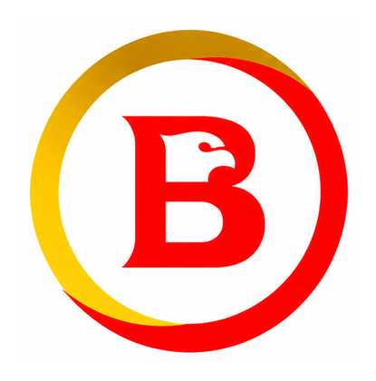
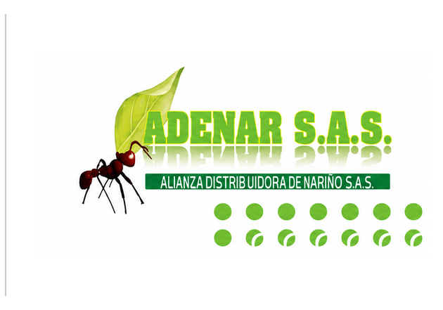
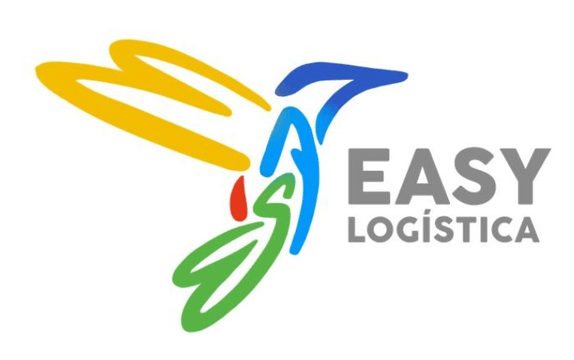

Bavaria · Pasto, Nariño
Desde el suroccidente colombiano, la operación que recibe, almacena y despacha la cerveza y las bebidas de Bavaria para todo el departamento — 24 horas, 7 días a la semana.
Aliados de la operación



Bavaria, Adenar S.A.S. y Easy Logística sostienen juntos la cadena de distribución del suroccidente del país.
01 — La operación
El CD Nariño coordina la última milla de Bavaria en el departamento: estibas que entran por el patio de cargue, pasan por el sistema de racks y salen en ruta hacia tiendas, distribuidores y consumidores, sin detenerse.
Cada área — almacén, montacargas, camiones, taller mecánico y administración — se mide y se mejora con la metodología 5S, para que un centro de este tamaño funcione con precisión de fábrica.
02 — Historia
De un lote comprado en Bogotá a una marca que se volvió costumbre en el suroccidente del país — el camino que conecta esa historia con la bodega de Nariño.
Leo Kopp, inmigrante alemán, se asocia con los hermanos Castello y adquiere el terreno donde nacería la fábrica de cerveza. Ese registro notarial se reconoce hoy como el acta fundacional de Bavaria.
La compañía registra el águila imperial como imagen de fábrica, el símbolo que desde entonces acompañaría etiquetas, avisos y membretes de la marca.
La fábrica lanza su primera cerveza Pilsener, la receta que con los años daría origen a la marca Bavaria tal como la conocemos hoy.
Sale al mercado la cerveza Póker, que se convierte en la marca tradicional del suroccidente colombiano antes de llegar a todo el país — la misma región que hoy atiende el CD Nariño.
Ya parte de AB InBev, Bavaria distribuye sus marcas en todo el país. En Nariño, esa cadena termina — y empieza de nuevo cada día — en este Centro de Distribución.
03 — Layout interactivo
Modelo real del CD Nariño: patio, cubierta, racks, bloques de producto y flujo de camiones. Arrastra para girar, desplaza para acercar.
04 — Sistemas
Los sistemas internos que el equipo del CD Nariño usa para gestionar la operación, minuto a minuto.